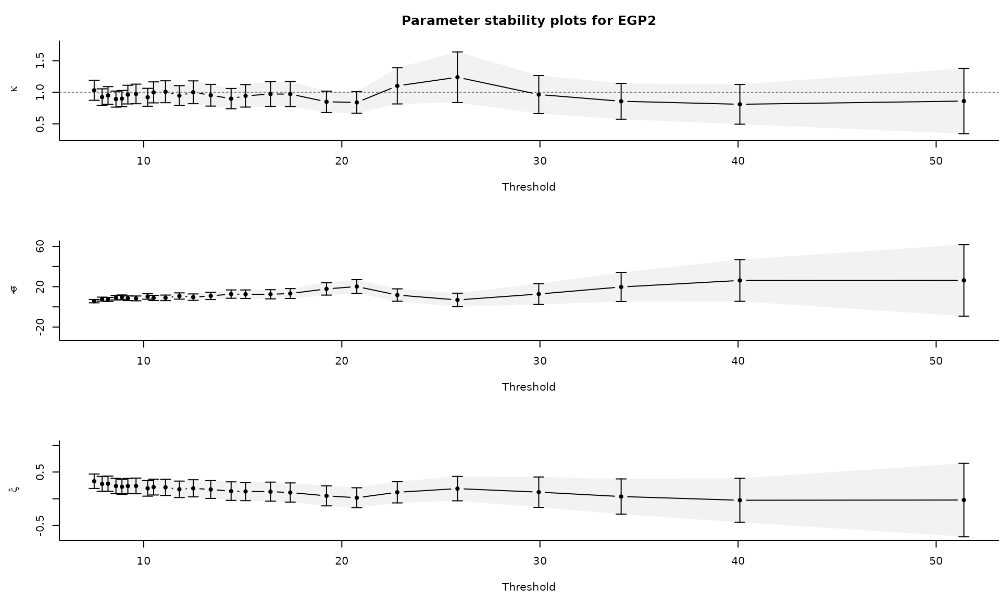
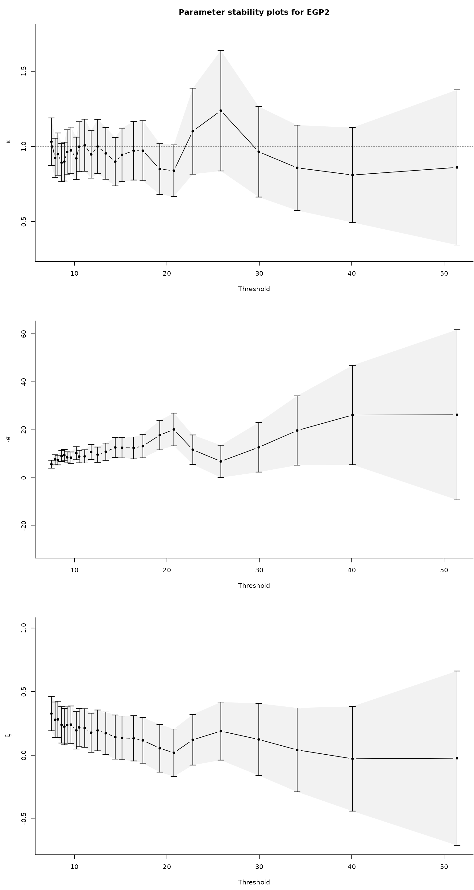
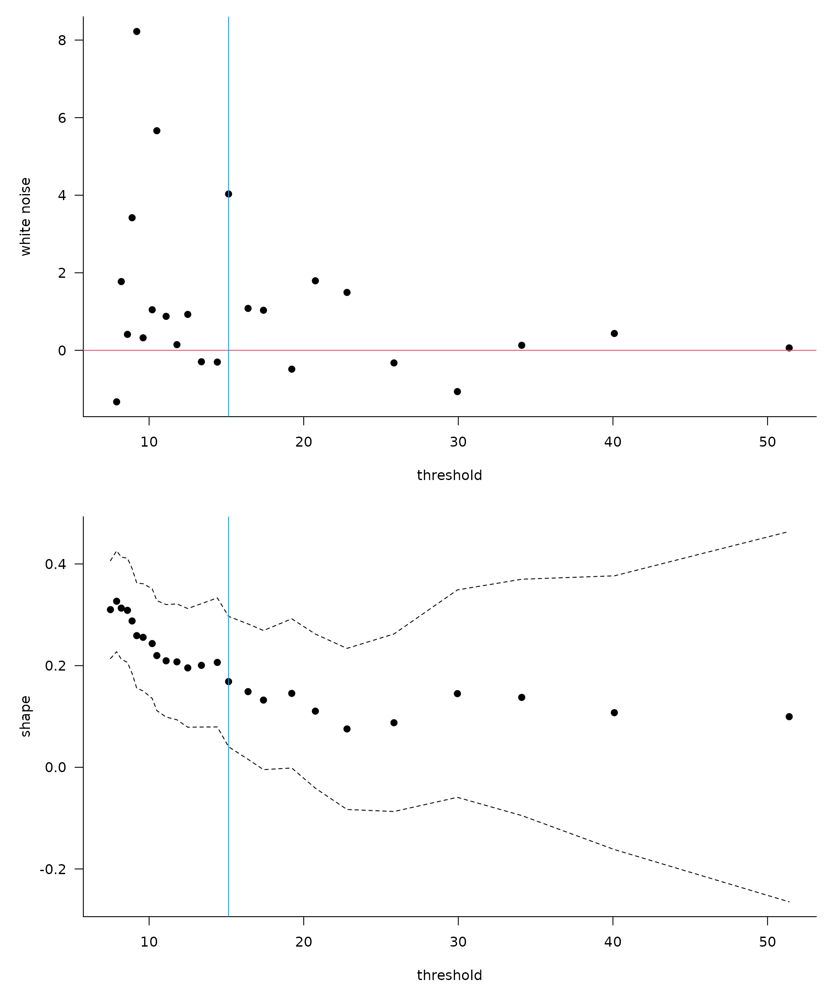

The generalized Pareto (GP) distribution with scale and shape is The range of the generalized Pareto distribution is if and otherwise.
Why is the generalized Pareto distribution so central to peaks-over-threshold analysis? The conditional distribution of exceedances over a threshold converges to a generalized Pareto distribution as converges to the endpoint of the distribution, where is the distribution function of .
If , straightforward calculations show that for any such that , meaning that conditional exceedances above a threshold also follow a generalized Pareto distribution. This property is termed threshold-stability.
The limiting distribution of threshold exceedances is generalized Pareto as but, in practice, we must choose a finite threshold in order to have enough exceedances to draw inference. Since the scaling constant is unknown, we have . The term in the denominator is the fraction of points exceeding the threshold, which has a binomial distribution.
Threshold selection is subtle and it is common to select a high percentile of the data, say the 95% value, as the threshold, even if this is asymptotically incorrect, as in this case as . Most approaches for threshold selection rely on properties of the generalized Pareto distribution (moments, threshold-stability) to determine a region within which the asymptotic distribution fits the data well and the parameter estimates are stable.
Below, we focus on recent graphical selection tools for likelihood
based inference; mixture models are reviewed in Scarrott and MacDonald (2012) and are available
in the package evmix.
Threshold stability plots
Consider a sequence of ordered candidate thresholds
;
one of the most widely used tools for threshold selection is the
threshold-stability plots of Davison and Smith
(1990). These show the point estimates of the shape
and the modified scale
,
which should be constant for any threshold
assuming that the generalized Pareto above
holds exactly. In addition to the point estimates, the asymptotic
pointwise 95% Wald confidence intervals are displayed; the standard
errors are obtained from the observed information matrix. While these
are displayed by many packages, notably extRemes,
ismev and evd , mev allows you to
use profile likelihood based confidence intervals, which typically offer
better coverage and capture some of the asymmetry of the distribution.
The mev package functions for producing threshold stability
plots are tstab.gpd and tstab.pp for
respectively the generalized Pareto and Poisson process likelihoods.
Parameter stability plots can be difficult to interpret because the confidence intervals are pointwise rather than simultaneous (each fit likewise uses an overlapping portion of the data). The plots also ignore changes in the estimated parameters due to the penultimate approximation.
Wadsworth’s diagnostics: white noise process and simultaneous threshold stability plots
The problem with the threshold stability plots lies in the point-wise
nature of the estimate. Assuming a superposition of
Poisson processes, Wadsworth (2016)
derives the limiting distribution of the maximum likelihood estimators
from the Poisson process for overlapping windows as the number of
windows
and
.
The joint asymptotic Gaussian distribution allows Wadsworth (2016) to propose two additional
diagnostics: a white noise sequence of differences in estimates of the
shape, standardized to have unit variance. The variables
,
where
is the Fisher information of the Poisson process likelihood for
exceedances above
,
should form a white-noise sequence of independent variables centered
around the origin; systematic deviations are indicative of inadequacy.
To formally test the hypothesis, a likelihood ratio test can be used
assuming a simple alternative, namely a single change point at threshold
.
The null hypothesis is
for
against the alternative
and
for
.
This alternative is motivated by results on model misspecification (White 1982), which suggest that the asymptotic
distribution may still be Gaussian, but with a different mean and
variance. This can be used to automate threshold selection, by picking
the smallest threshold for which the
-value
is above the level
.
The function W.diag returns diagnostics plots (for the
likelihood ratio statistic path, the white noise process and threshold
stability along with asymptotic simultaneous confidence intervals) for
non-homogeneous Poisson process model and for the bivariate exponential
and the over a sequence of thresholds, specified using q1,
q2 and k. The argument M is a
tuning parameter that can be chosen in a way such that the parameters of
the non-homogeneous Poisson process likelihood coincide with those of
the generalized extreme value distribution for blocks of size
;
see Coles (2001) to this effect.
A main criticism of the proposals of Wadsworth (2016) is their lack of robustness. For the asymptotic result to be approximately valid, the number of thresholds must be large, which implicitly requires large samples for each superposed point process. Moreover, the estimated difference in Fisher information matrices often fails to be positive definite in practice. The procedure is highly sensitive to the choice of . Changing the set of thresholds under consideration leads to potentially completely different parameter estimates being chosen by the automated procedure.
Changepoint tests based on penultimate approximation
Let denote a thrice-differentiable distribution function with endpoint and density . Define the reciprocal hazard function . The existence of the limit is necessary and sufficient for convergence to an extreme value distribution and Smith (1987) shows that there exists such that unless is constant. The penultimate shape parameter for the generalized Pareto distribution is , but the true shape parameter lies between and .
When we fit the limiting parametric models to finite samples, maximum likelihood estimates of the shape parameter will be closer to their penultimate counterparts than to the limiting value and we can expect them to vary as we increase the threshold.
Northrop and Coleman (2014) adapt the
idea of Wadsworth and Tawn (2012) and fit
a generalized Pareto model with piecewise constant shape to
different thresholds; continuity constraints at the thresholds impose
restrictions on scale parameters, so the model only has
parameters. A score test can be used to test the hypothesis of equal
shape and it only requires evaluation of the model under the null
hypothesis that a generalized Pareto distribution is valid above all
thresholds. A diagnostic plot is obtained by plotting
-values
against threshold. One can then choose to take, e.g., (a) the lowest
threshold at which the
-value
is non-significant, or (b) the lowest threshold at which the
-values
for all higher thresholds are non-significant: under the null
hypothesis, there is an
probability of rejection at any given threshold. The function
NC.diag computes the
-value
of the score test as a function of the threshold.
Extended generalized Pareto
Papastathopoulos and Tawn (2013)
propose three extended generalized Pareto distributions: for example,
the third extended generalized Pareto model has distribution function
for
and
.
Each family reduces to the generalized Pareto when the additional
parameter
and share the same tail index
,
the extended generalized Pareto provide more flexibility for modelling
departures from the limiting form. Standard parameter stability plots
can be used to find a region in which
and the shape parameter stabilizes. The additional parameter gives
flexibility for modelling departures from the limiting distribution and
the hope is one can fit to exceedances over lower threshold and increase
the number of points to which the distribution is fitted. The stability
plots, obtained through tstab.egp, suffer from the same
caveats as classical diagnostics.
Robust selection
The extreme value distributions have unbounded influence functions and outliers can strongly affect the estimate of the shape. Dupuis (1999) proposes an optimal -robust estimator of the generalized Pareto parameters. Points that are outlying or for which the fit is poor are downweighted; if the weights for the largest observations are very low, this suggests that the threshold is too low. While there is no guarantee that observations that were simulated from a generalized Pareto distributed would not be downweighted, systematic downweighting of the largest exceedances may be indicative of poor fit.
Examples
We are now ready to go back to the Maiquetia data and try to select a reasonable threshold. To this effect, we select a sequence of candidate thresholds and run the procedures described above.
library(mev)
data(maiquetia, package = "mev")
day <- seq.Date(from = as.Date("1961-01-01"),
to = as.Date("1999-12-31"),
by = "day")
nzrain <- maiquetia[substr(day, 1, 4) < 1999 & maiquetia > 0]
# Keep non-zero rainfall, exclude 1999 observations
nzrain <- maiquetia[substr(day, 3, 4) < 99 & maiquetia > 0]
thcan <- quantile(nzrain,
seq(0.8, 0.99, length.out = 25))
tstab.gpd(xdat = nzrain,
thresh = thcan,
method = "profile")
#> Warning in x$mle[, 1] + c(-0.1, 0.1): longer object length is not a multiple of
#> shorter object length#> Warning in x$mle[, 2] + c(-0.1, 0.1): longer object length is not a multiple of
#> shorter object length
Another option is the Northrop and Coleman
(2014) penultimate test, which considers a sequence of threshold
and tests whether a single shape fits the data against the alternative
where the shape parameter differs at each candidate threshold following
a step function. The NC.diag function plots the
-value
path against the candidate thresholds; the top axis also displays the
number of threshold exceedances. The extended generalized Pareto
distribution can also be used to produce threshold stability plot with
95% confidence intervals. The parameter
if the model is generalized Pareto. Although there are three potential
families, the family egp2 seems prefered for most
settings.
fNCdiag <- thselect.ncpgp(xdat = nzrain, thresh = thcan, plot = TRUE)
tstab.egp(xdat = nzrain,
thresh = thcan,
model = "pt-power")
What do you notice on the parameter stability plots?
We can plot simultaneous parameter stability plots for the shape, as
well as the white-noise sequence. The W.diag function,
which implements the tests of Wadsworth
(2016), returns the white noise process and calculates by
simulation the null distribution, selecting the lowest threshold at
which the hypothesis of changepoint is not rejected for all higher
thresholds. For the Maiquetia rainfall, a threshold around 15.15mm is
returned.
fWdiag <-
thselect.wseq(
xdat = nzrain,
model = "nhpp",
thresh = thcan,
plot = TRUE
)
Exercice
- Try using the threshold diagnostic tests on the
niddriver flow data. Which threshold would you choose based on the conclusions of the test? Repeat the analysis on your favorite dataset. - Compare the inference obtained by using the different threshold (by comparing, for example, return levels or quantiles of a distribution of interest). Are your results sensitive to the choice of threshold?